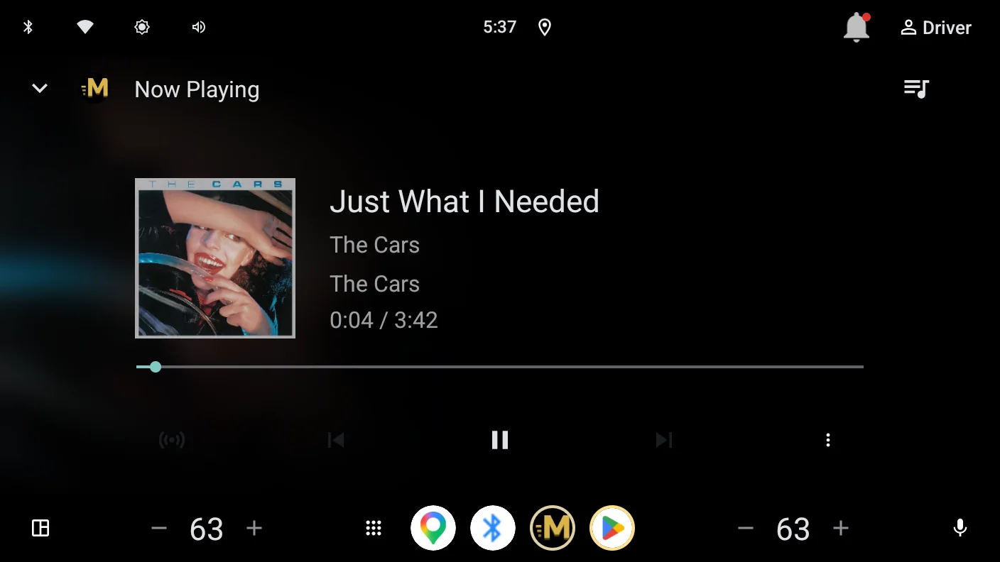
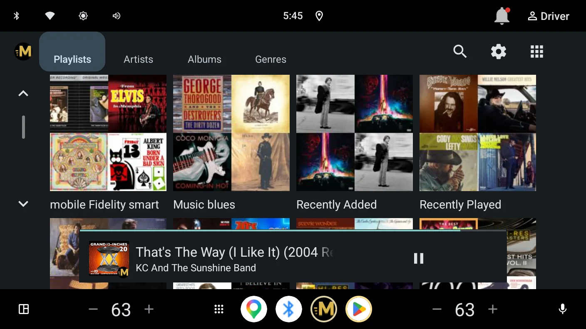
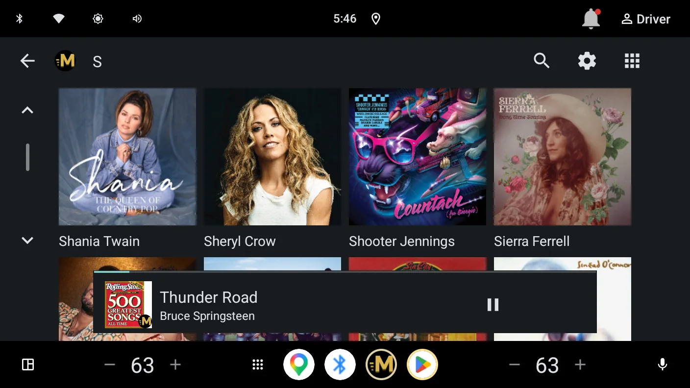
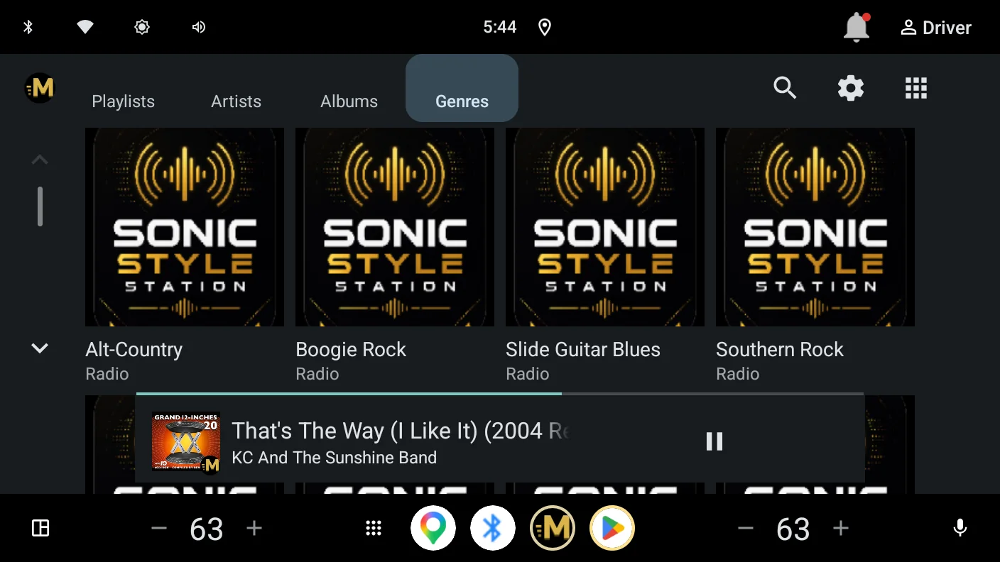
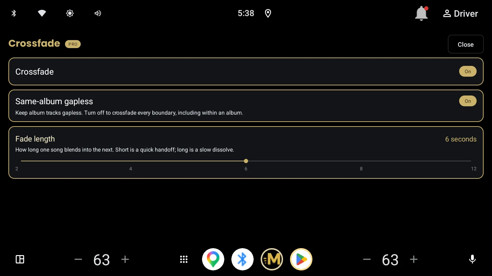
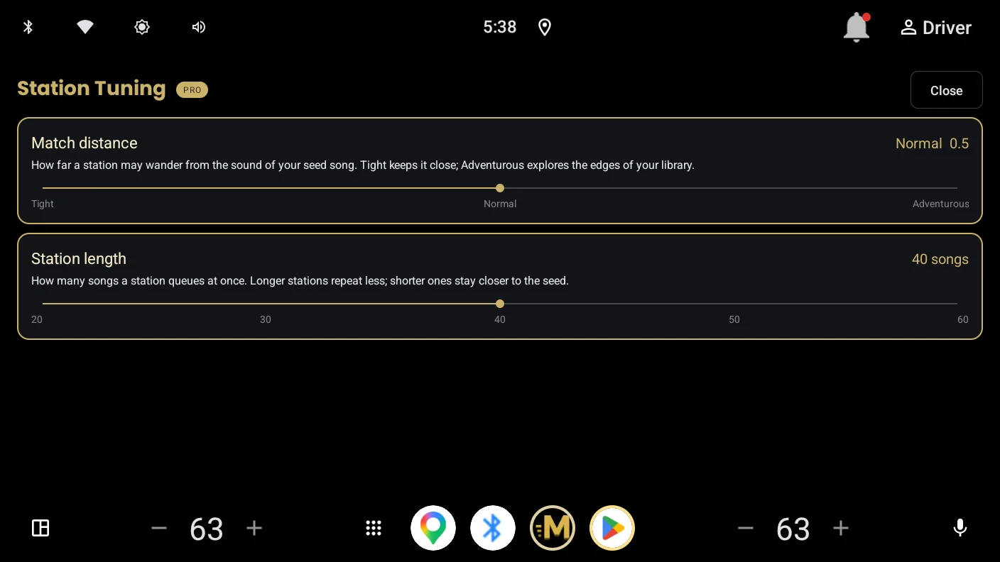

Your Plex music library, playing natively in your car.
No phone, no cables, no projection. Momentum signs in with your Plex account and streams your own library straight to your Android Automotive OS vehicle, in full quality.
Get it on Google Play Check the requirements first

What Momentum does
- Direct-play streaming that leaves your files untouched. Full-quality FLAC arrives as FLAC. Your music is never needlessly transcoded.
- Automatic server discovery that reconnects as your car moves between networks.
- Browse your library by playlists, artists, albums, or genres. Typed search when parked.
- Voice control: say "play [song]", "play [artist]", "play [playlist]", or "play [genre]".
- Shuffle, repeat, a live Playing Next queue, and resume across power cycles.
- Tag the current track to a Plex playlist for later, right from the car.
- Driving-safety gating built for AAOS: browsing and search lock while moving; playback and voice stay available.


Momentum Pro
Everything above is free and stays free. Pro is a one-time purchase, no subscription, that adds:
- Crossfade — two independent decoders with real overlap. Tracks from the same album still play gapless, so records flow the way they were sequenced.
- Two servers at once — pair a second Plex server, browse both from the car, and move playback between them without stopping the music.
- Sonic stations — build a station from whatever is playing, with the similarity range and length under your control.



One thing to check before installing: your car streams over the internet, so your Plex server must be reachable from outside your home network. The two-minute test and the full requirements are on the Before You Install page.